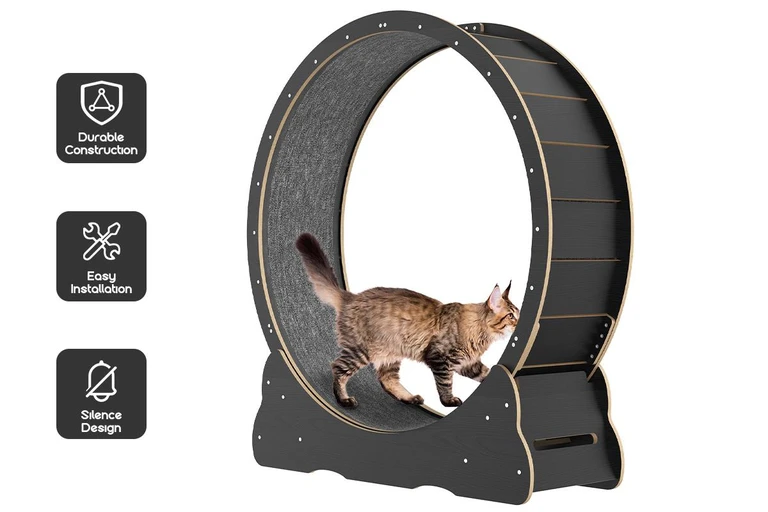

So, I'm trying to ensure the cats have more stimulation during the day. I've been playing with them and brushing them a lot. I'm going to clean up the outside area more and maybe sort out some form of way to have them there more often. I need more sun as well, so I'm going to try and have them be outdoors every now and then. I really hope they end up liking the cat wheel, but if not, we'll figure something else out. Here's a picture of the one I bought, thanks Kogan 
It's a cheap one, but if they like it, I'll get them a better one later on.